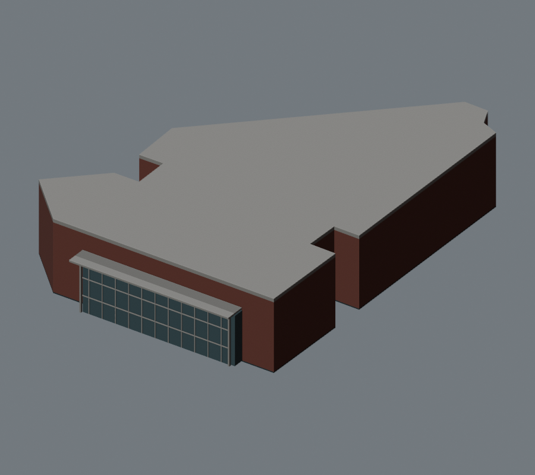
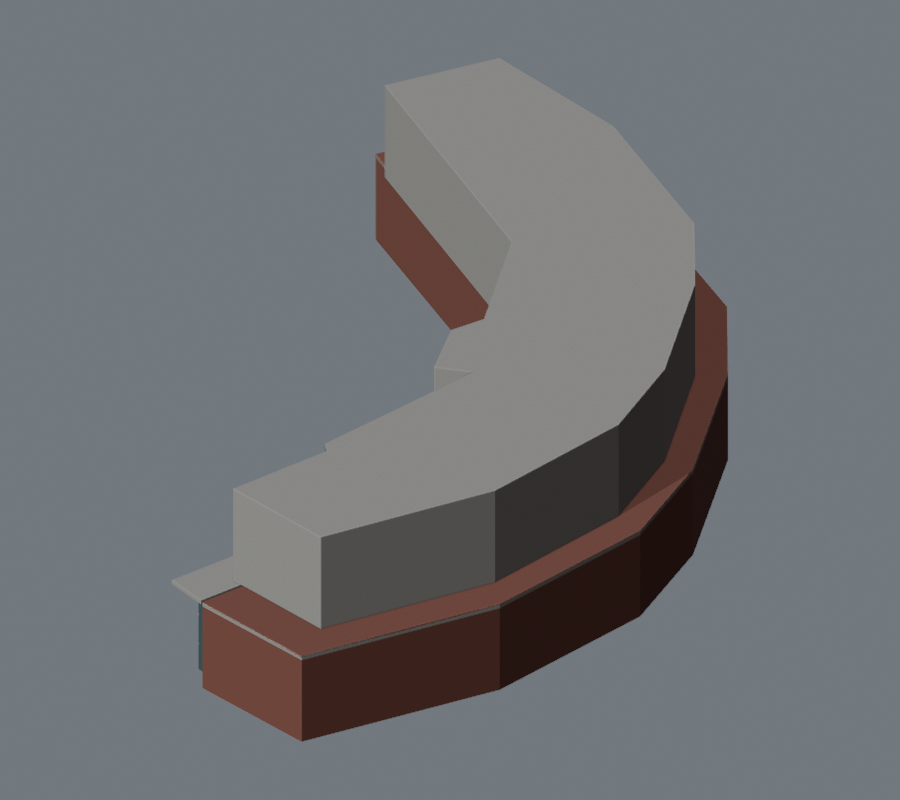
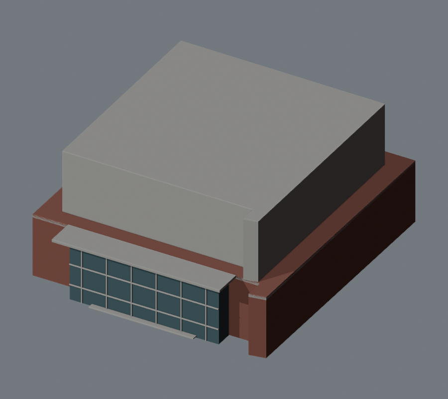
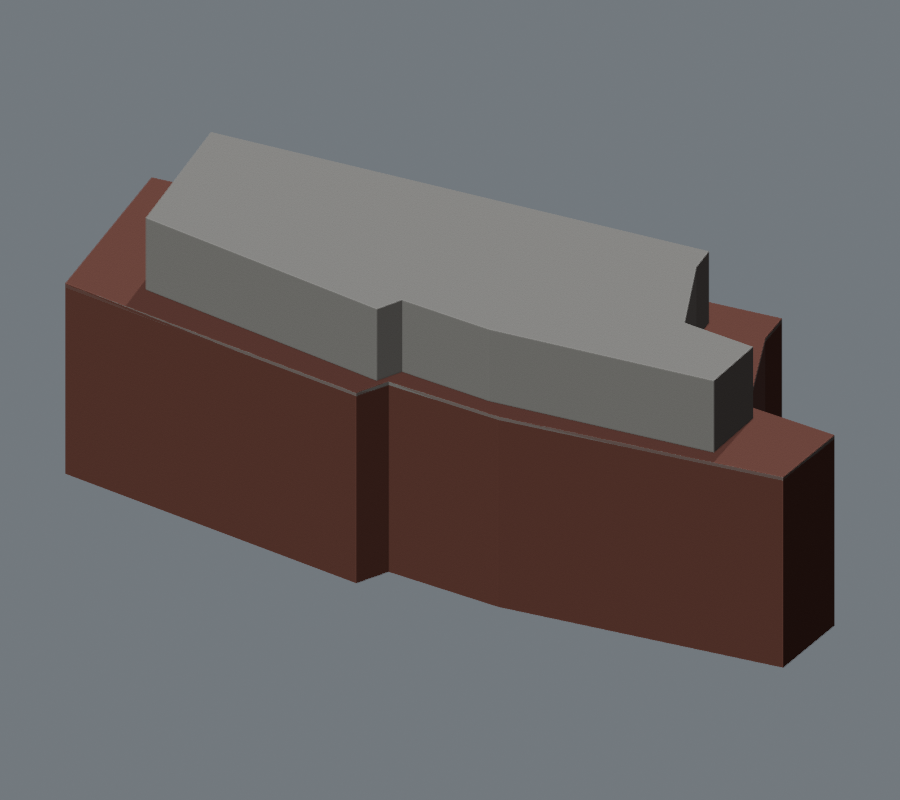

← 單體模型四棟重建 · 實景與模型對照
2026-10-20 · 窗帶、磚柱、入口及屋頂結構直接包含在可下載的 3D 模型內。
照片用於辨認可見輪廓及建築特徵；比例、標高與未見立面仍為簡化估算。照片與模型視點不同，這頁不是測繪驗收。官方照片由原站載入，版權屬原作者及理大；修正前圖片只作歷史對照。
Pao Yue-kong Library
直向磚柱、窄窗、退入入口與端部識別塔；取消中央佔位玻璃盒。
 官方實景 · 來源
官方實景 · 來源
修正前 · 9f13d2a 修正後 · 同一份 GLB
修正後 · 同一份 GLBLee Shau Kee Building
表達官方記錄的 14 層、弧形／轉折立面、藍色橫窗與磚帶。米制高度為照片估算。
 官方實景 · 來源
官方實景 · 來源
修正前 · 9f13d2a 修正後 · 同一份 GLB
修正後 · 同一份 GLBCommunal Building
磚牆與連續橫窗、退入式地下玻璃及外側承重柱。
 官方實景 · 來源
官方實景 · 來源
修正前 · 9f13d2a 修正後 · 同一份 GLB
修正後 · 同一份 GLBBlock X
改為低層玻璃基座、窄服務翼、屋頂綠化與連接坡道，扶手底腳跟隨坡面。
 官方實景 · 來源
官方實景 · 來源
修正前 · 9f13d2a 修正後 · 同一份 GLB
修正後 · 同一份 GLB模型檔案及幾何檢查 · 重建記錄